달콤한 인생 웹애니메이션
웹애니메이션 <달콤한인생>의 아트디렉팅을 진행하였습니다.
형식 ㅤㅤㅤㅤㅤㅤ3D 웹애니메이션
장르 ㅤㅤㅤㅤㅤㅤSF 추리
길이 ㅤㅤㅤㅤㅤㅤ2분 X 27화 (시즌1,2)
담당역할
캐릭터를 제외한 헤어, 의상, 배경 등 모든 아트웍을 진행하였으며,
컨셉, 3D 제작 및 라이팅&랜더링, 합성을 단독으로 진행하였습니다.
시즌1의 전체와 시즌2의 절반을 작업하였습니다.
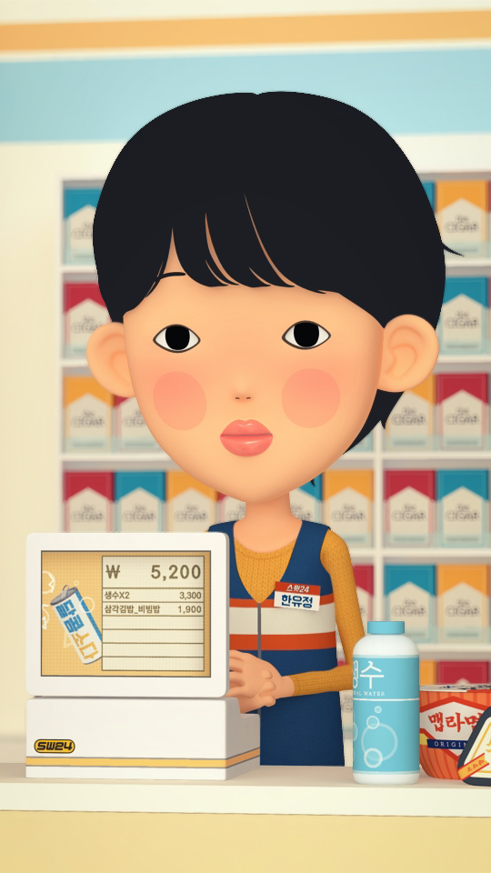
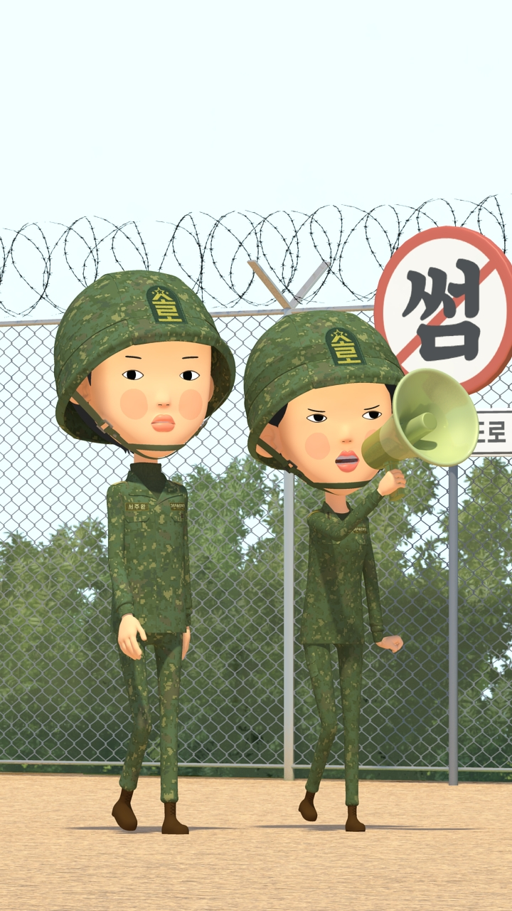
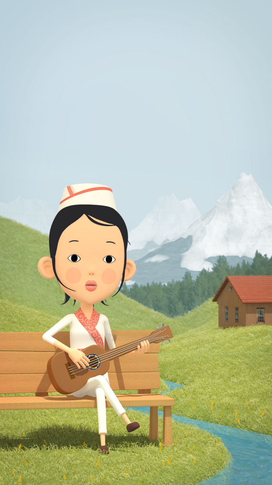
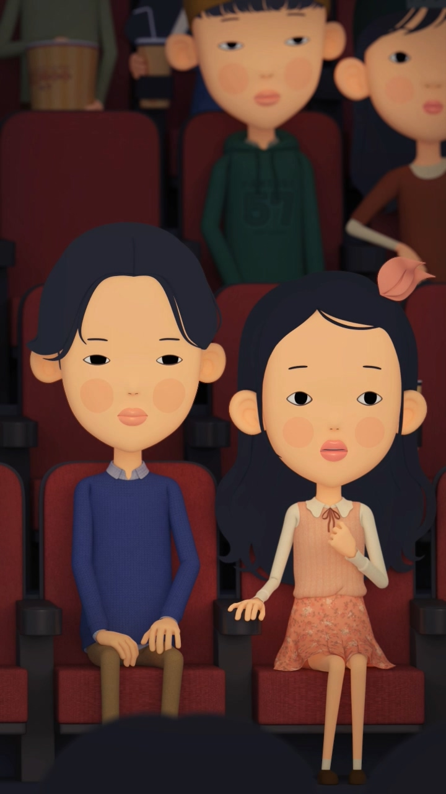
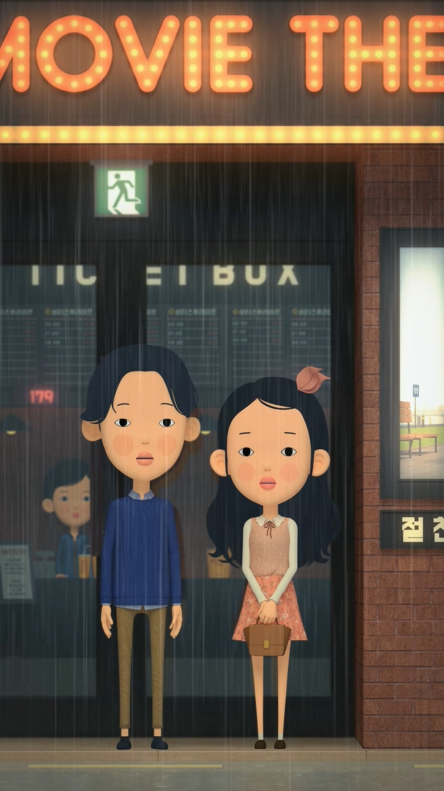
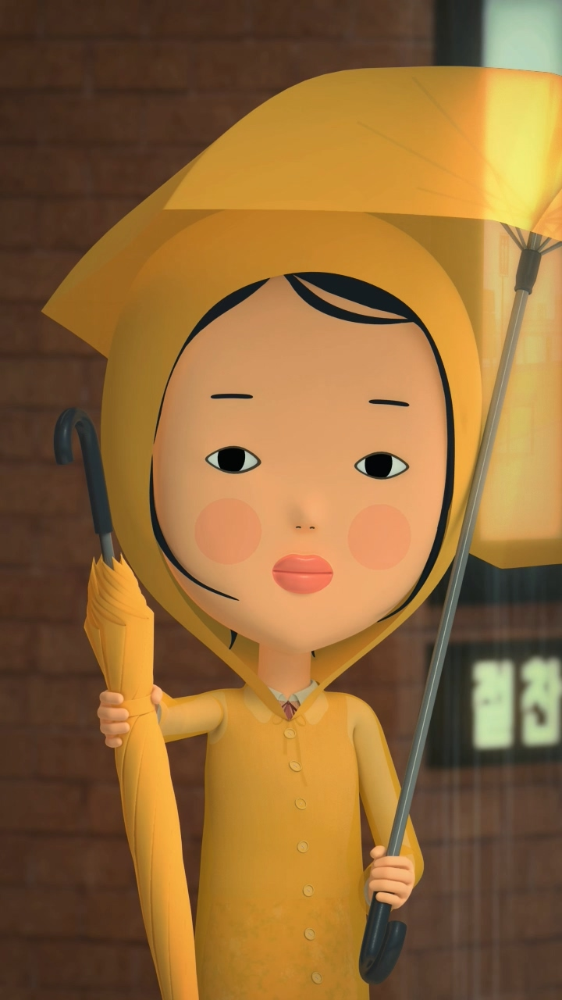
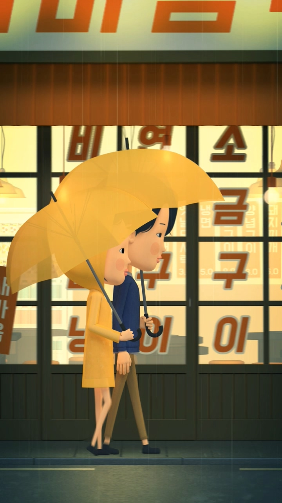
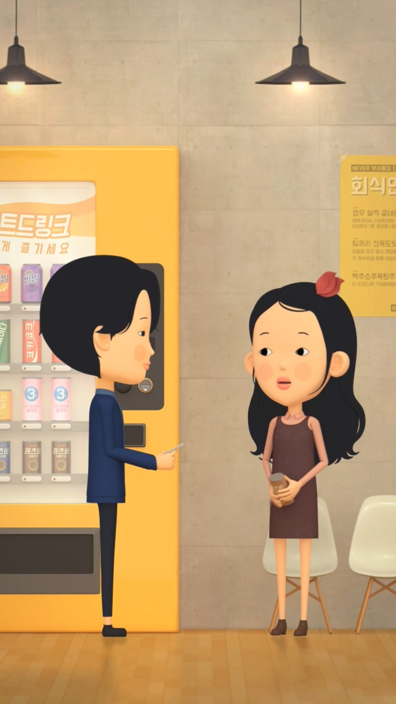
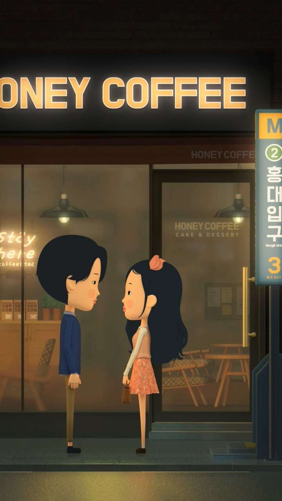
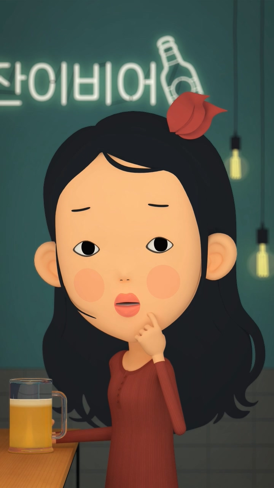
3D 아트
각종 3D아트를 작업한 경험이 있습니다.
(디자인부터 3D제작 및 랜더링까지 진행하였습니다.)
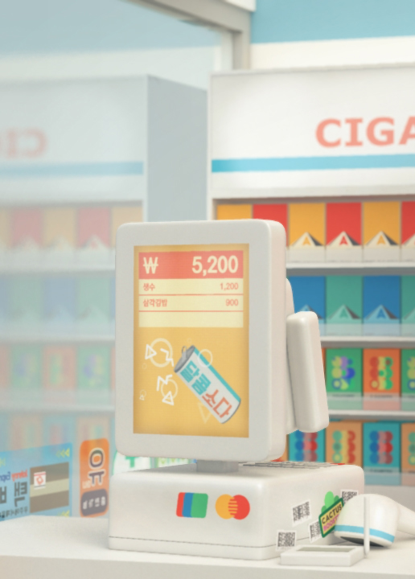
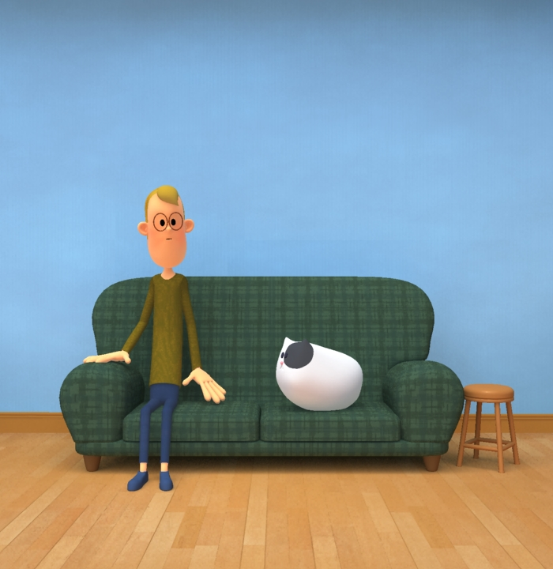
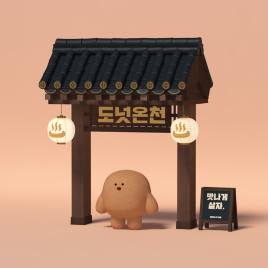
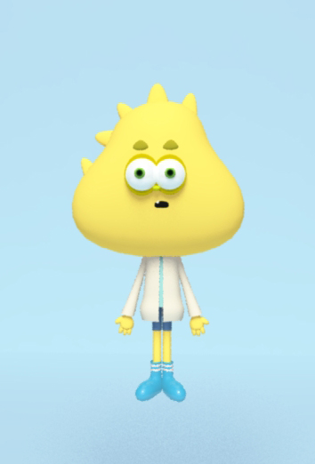
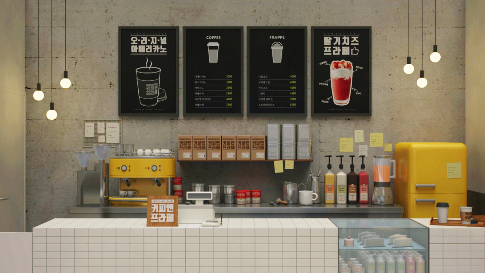
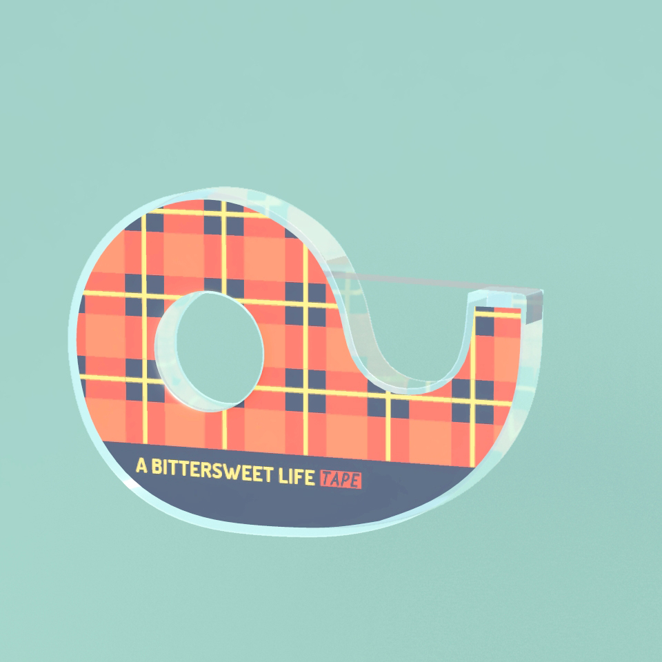
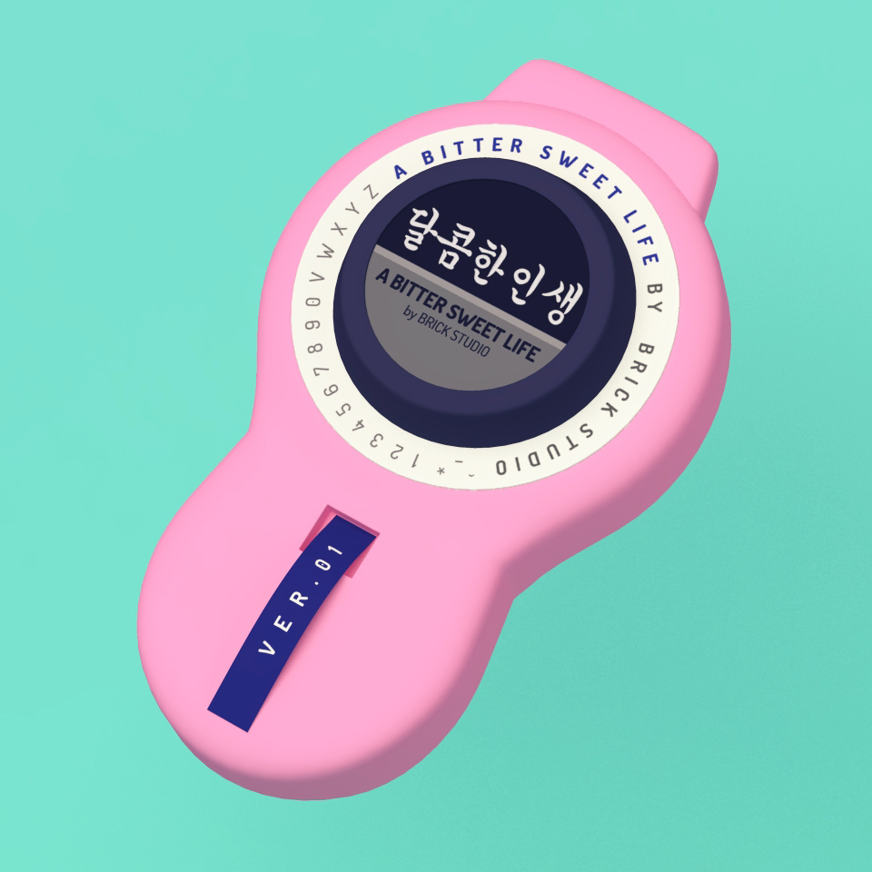
드로잉
(이미지들 삽입)
 달콤한인생
달콤한인생